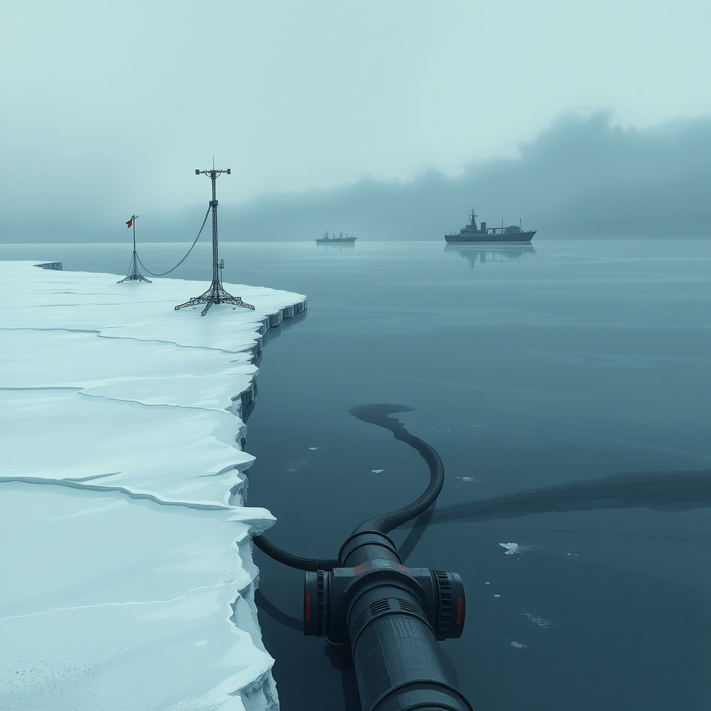
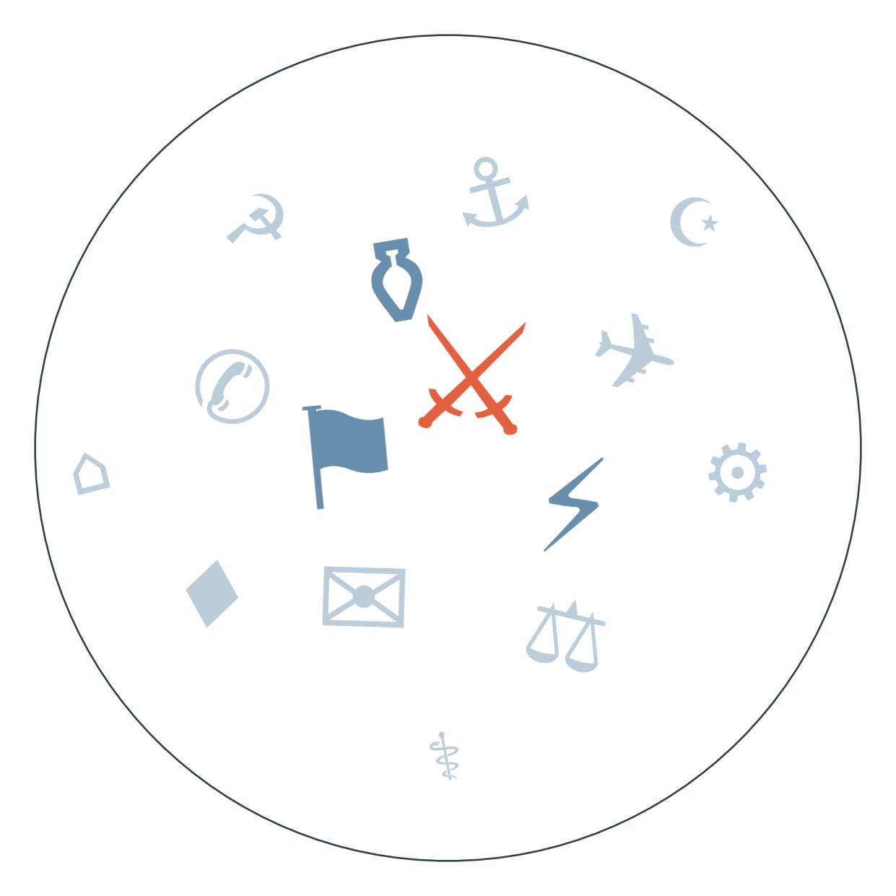

Ранковий бріф · огляд світової преси

Цієї ночі Росія вдарила по Києву щонайменше 188 дронами й ракетами, вдруге за тиждень обстрілявши Південний міст і вперше застосувавши дрон зі спеціальною боєголовкою для перерізання опор ліній електропередач. Атака остаточно ховає ідею точкових ударів по енергетиці — тепер ідеться про системне руйнування мережі перед зимою, а доля формату Путін-Трамп-Зеленський лишається відкритою (4-й день після зриву енергоперемир'я, сюжет "Пошук формату завершення війни").
США погрожують Ірану "дуже сильним" ударом, якщо підтвердиться причетність Тегерана до нападу на рейс FlyDubai, а британська поліція заарештувала вже шосту особу — громадянина з подвійним британсько-іранським паспортом — у справі про можливий теракт на авіабазі Fairford. Водночас Хаарец показує, що версія Нетаньягу про "ісламістську радикалізацію" другого пілота вже розходиться з фактажем, а в мережі поширили фейковий сюжет нібито від BBC, що звинувачує індійського пасажира (третій день ескалації після повного виведення військ США з Іраку).
США вимагають від Європи негайно звільнити стратегічні запаси дизельного пального, а Трамп погрожує забороною експорту дизеля зі США — ціни зростають через війну проти Ірану, і Вашингтон перекладає частину цієї ціни на європейських союзників. Міністри ЄС обговорюють відповідь уже цієї п'ятниці, і рішення вплине на вартість палива в усій Європі ще до холодного сезону.
Менш ніж за тиждень до виборів у Бразилії судова система втрутилася в теледебати — суд додав нових кандидатів, Флавіу Болсонару відмовився брати участь і звинуватив Лулу у "цензурі через друзів у судовій владі", після чого Globo взагалі скасувала ефір. За опитуванням Vox Brasil, Болсонару вже випереджає Лулу 48,2% проти 45,2% у другому турі, і зрив дебатів напередодні голосування може або закріпити цей розрив, або зламати його.
Південна Корея погрожує Україні "подальшими заходами", якщо Київ публічно не вибачиться за історію з передачею Сеулу північнокорейських військовополонених, захоплених українською армією. Для Києва це несподіваний фронт тиску від одного з непрямих постачальників зброї й боєприпасів, і те, як швидко залагодять конфлікт, покаже, наскільки міцна ця підтримка насправді.

Сюжет 1: Удар по енергостанції біля Медіни, приписуваний хуситам
Замовчують: жодне з іранських видань не визнає версію про удар хуситів по Медіні як факт — навіть реформістська Shargh оминає цю новину.
Чому розходяться: саудівська коаліція (через France 24) зацікавлена показати хуситів агресорами проти святині ісламу, щоб виправдати військову відповідь і отримати міжнародну підтримку. Індійська ділова преса дивиться на подію через призму енергетичної безпеки Затоки, бо Індія залежить від нафти цього регіону. Державне іранське агентство уникає підтвердження версії про удар по Медіні, бо визнання означало б непряме визнання причетності союзного Тегерану ополчення до атаки на святиню ісламу, що підриває легітимність Ірану як "захисника ісламу". Реформістська Shargh натомість обирає говорити про санкції, бо це дозволяє критикувати наслідки конфронтаційного курсу влади, не торкаючись напряму постачання зброї хуситам.
Сюжет 2: Зрив теледебатів у Бразилії
Замовчують: жодне з чотирьох видань не пояснює, чому суд за кілька годин до ефіру вирішив додати нових кандидатів — ця процедурна деталь згадується побіжно, але не аналізується.
Чому розходяться: Folha, традиційно близька до урядового табору, зацікавлена показати, що сам Лула дистанціюється від "некоректного" рішення судової системи, аби не нести політичну відповідальність за скандал. Gazeta do Povo, консервативне видання, будує наратив про судове переслідування правих сил, бо це мобілізує електорат Болсонару перед голосуванням. Valor Econômico як ділове видання уникає політичного вибору сторони й транслює позицію індустрії ЗМІ, бо для бізнес-аудиторії важливіша стабільність правил гри, ніж хто правий. Poder360 обирає мову цифр, бо для reference-видання головна цінність — дати читачеві сире число, яке кожен інтерпретує сам.
30.09 — США завершили повний вивід військ з Іраку після 23 років присутності → 30.09 — Рубіо наказав іранській делегації залишити США, переговори через Катар зірвані → 02.10 — Трамп погрожує Ірану "дуже сильним" ударом через підозру в причетності до нападу на рейс FlyDubai, британська поліція заарештувала шосту особу у справі Fairford → веде до ймовірності відновлення авіаударів США по Ірану до 14 жовтня (наш відкритий прогноз).
29.09 — масована атака дронів по Києву остаточно поховала енергоперемир'я → 29.09-02.10 — РФ переходить від точкових ударів до системного руйнування мережі, уражаючи Академію наук і мости → 02.10 — застосовано дрон зі спецбоєголовкою для перерізання ЛЕП, дрони тричі залітали у Молдову, Румунія піднімала винищувачі → веде до загострення тиску на Молдову (дефіцит води, порушення повітряного простору) і зростання терміновості західної допомоги мережі перед зимою.
01.10 — дедлайн тарифного перемир'я минув без підтвердженого прориву, Пекін оприлюднив жорсткий план "300 на 300" → 02.10 — міністри торгівлі G20 у Мілуокі не досягли прогресу щодо промислового надвиробництва → веде до того, що переговори Пекіна з ЄС 8-9 жовтня стають дедалі напруженішими, а альтернативний дедлайн 10 січня 2027 року виглядає дедалі ймовірнішим сценарієм.
Дизельна криза (див. ГОЛОВНЕ): Трамп погрожує забороною експорту дизеля зі США напередодні проміжних виборів, що посилює тиск на ціни в Європі (за BBC News, France 24).
Іпотечні ставки у США наблизились до трирічного максимуму, нові заявки на кредити впали (за Axios).
Китай: індекс нової економіки Caixin (NEI) впав до 34,1 з попередніх 35 через скорочення техінвестицій (за Caixin).
Малі: за даними The Africa Report (поки єдине джерело), адміністрація Трампа готує підхід до доступу до золота й літію Малі — новина потребує підтвердження іншими редакціями.
Bild не втрачає нагоди розгойдати тему FlyDubai під кутом "а чи не мулли стоять за замахом?", тоді як серйозна преса (Хаарец, France 24) обережно пише, що версія Нетаньягу про радикалізацію другого пілота поки не підтверджена і вже розходиться з фактажем.
Швейцарський Blick драматизує невдалу страту в Теннессі як провал американської системи правосуддя в цілому, тоді як серйозні видання (BBC, Guardian) зосереджені на вужчому й практичнішому питанні — чи призупинить штат усі страти до завершення розслідування.
Конфлікт із Південною Кореєю довкола північнокорейських військовополонених переріс у відкриту погрозу "подальших заходів", якщо Київ не вибачиться публічно. Південна Корея — важливий непрямий постачальник боєприпасів і технологій через партнерські ланцюги, тож загострення стосунків може позначитися на швидкості поставок напередодні зими.
Нова хвиля ударів по енергомережі, зокрема спецбоєголовка для перерізання ЛЕП і повторний удар по Південному мосту Києва, підвищує терміновість західної допомоги обладнанням для відновлення мереж. Паралельно дрони тричі залітали у повітряний простір Молдови, що посилює регіональний тиск і може прискорити рішення ЄС щодо вступу Молдови й України як "альтернативи НАТО".
ОБСЄ задокументувала на засіданні російський злочин в Олешках і закликала забезпечити гуманітарний коридор, повідомляє Babel. Про це майже не пишуть великі західні видання — вся увага прикута до ескалації довкола Ірану й FlyDubai, а тема окупованих територій лишається вузько українським сюжетом, бо вимагає окремого розслідування на місці, недоступного для більшості редакцій.
Хаарец пише, що санкції за насильство поселенців можуть "паралізувати" ізраїльські банки, і прямо запитує: чому про цю загрозу мовчать? Мовчить саме ізраїльська преса й уряд, бо тема незручна для правлячої коаліції, яка залежить від голосів поселенського електорату, а міжнародна преса просто не підхопила її, бо програє увагу гучнішим сюжетам про Іран і Газу.
EUobserver розповідає про схему фальшивих студентських віз у Польщі з "російськими зв'язками", що забезпечує дешеву робочу силу — і це єдине видання, яке взагалі порушує тему. Польські видання (Do Rzeczy, Gazeta Wyborcza) того ж дня зайняті внутрішньою битвою Туска з Навроцьким довкола податку на паливні концерни, а тема міграційних схем вимагає ресурсомісткого розслідування, на яке бракує часу напередодні іншої політичної драми.
Середня впевненість. Нарощування сил США в Затоці (третій авіаносець, додаткові батареї Patriot у Саудівській Аравії й Катарі) може бути підготовкою до обмеженого удару по Ірану чи пов'язаних структурах найближчими тижнями. На чому ґрунтується: Al Jazeera (посилання на "US official") та Axios ("scoop" про Patriot) — два окремі джерела, що збіглися в часі з погрозами Трампа щодо FlyDubai.
Низька впевненість. Риторика Путіна про "всі види зброї" для захисту Калінінграда (див. ПУЛЬС: рф) може бути прелюдією до нового раунду офіційних заяв НАТО-Росія про безпеку регіону. На чому ґрунтується: одна заява Путіна, ретрансльована синхронно виданнями кількох країн того самого дня — це одне джерело, поширене багатьма редакціями, а не кілька незалежних підтверджень.
Середня впевненість. Судова криза навколо теледебатів у Бразилії може вплинути на явку й легітимність результату виборів, що відбудуться протягом найближчого тижня. На чому ґрунтується: три бразильських джерела різного політичного спрямування (Folha, Gazeta do Povo, Valor Econômico), які одностайно фіксують факт скасування дебатів, хоч і трактують причини по-різному.
Наші:
Рахунок: 10 з 27 (базово 9 з 27) — сьогодні додатково закрито без справдження два прогнози з минулим горизонтом 01.10 (координація ППО Саудівська-Ізраїль, операція Ізраїлю проти Хезболли).
Південна Корея оголосить конкретні обмежувальні заходи у відповідь на суперечку щодо полонених КНДР, якщо Україна не принесе публічних вибачень до 16.10.2026
ЄС ухвалить спільне рішення про вивільнення стратегічних дизельних резервів у відповідь на тиск США до 09.10.2026
Флавіу Болсонару збереже лідерство над Лулою в опитуваннях перед виборами попри скандал зі скасуванням дебатів, до 09.10.2026
Кажуть інші:
Дональд Трамп (за Gulf News) — очікує, що війна США з Іраном закінчиться "дуже скоро", через підрив чи угоду.
Дональд Трамп (за CBC News) — погрожує "дуже сильно" вдарити по Ірану, якщо підтвердиться причетність Тегерана до нападу на рейс FlyDubai.
Президент Південної Кореї (за BBC News) — попереджає про "подальші заходи" проти України, якщо Київ не вибачиться публічно за історію з полоненими КНДР.
Високопоставлений офіційний представник США (за Al Jazeera English) — повідомляє про намір відправити третій авіаносець у напрямку Ірану.
8-9 жовтня — переговори Пекіна з ЄС на тлі жорсткого плану "300 на 300"; запасний дедлайн тарифного перемир'я США-Китай — 10 січня 2027 року.
Базова лінія у прогнозах. Відсоток «базово» — це ймовірність події за інерцією, якщо ніхто нічого не робитиме й нічого не зміниться. Друге число — наша впевненість. Прогноз має сенс лише тоді, коли ці числа розходяться: збіг означає, що ми просто описали поточний стан.
Відсотки в карті уваги. Частка країни в денному обсязі зібраних матеріалів. Не показник важливості події, а показник того, скільки місця країна зайняла в новинному потоці за добу. Різкий стрибок частки зазвичай означає, що в країні щось відбувається.
Стрічки, які не відповіли. Не відповіли: De Standaard, Euractiv, Telex, Al Arabiya, El Universal, Milenio.